Get to know the bars
How-to
Use the bars to navigate and control the page you're reading. This is the standard two-row bar. If you picked Minimal in the setup, you have the one-row Minimalist Address Bar instead: see Use the Minimalist Address Bar.
The address pill
The pill floats over the bottom of the page. From left to right:
- Back and Forward arrows. A colored dot between them means the tab is in a space with its own sign-ins (a lock means the space is locked).
- A lock (a secure page) or a globe (not secure), then the site's name. Tap the name to search or type an address. Hold it for Copy link, and for Paste (plus Paste and go for a copied address) when you've copied something.
- The blue shield on the right is Shields, with how many ads and trackers it blocked on this page. Tap it for this site's Shields, like turning protection off for a site that doesn't work: see See what was blocked, and let a broken site through.
While a page loads, a thin line in Wayward's colors runs along the bottom of the pill.
The buttons
Under the pill is a row of buttons. As Wayward comes, they are:
- Home shows Wayward's start page. It's drawn over your tab, so Back takes you to the page again. If New tabs open on is set to Search engine's page, Home opens your search engine's page instead.
- Reload loads the page again. It rests (faded) on the start page.
- Bookmark, the star, saves the page to your bookmarks; tap again to remove it. It's filled in while the page is saved. Hold it to open Bookmarks.
- The colored stars in the middle open the AI assistant. While the assistant works on a reply, their colors turn and they breathe. Without Premium it opens the Premium page. You can put something else in the middle: see Change the bottom bar's buttons.
- Tabs, the rounded square, shows how many tabs are open (inactive tabs aren't counted). It's filled in while you're in a private tab. Tap it for the Tabs screen.
- Downloads opens your downloads. While downloads run it shows a ring with their progress, and a number once two or more are going.
- The ⋮ menu (TalkBack calls it Menu) opens the menu: see Find your way around the menu.
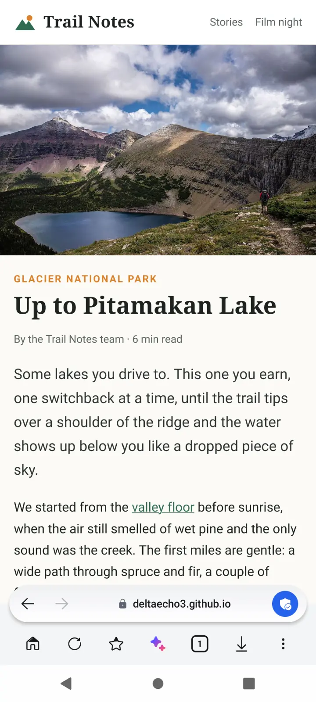
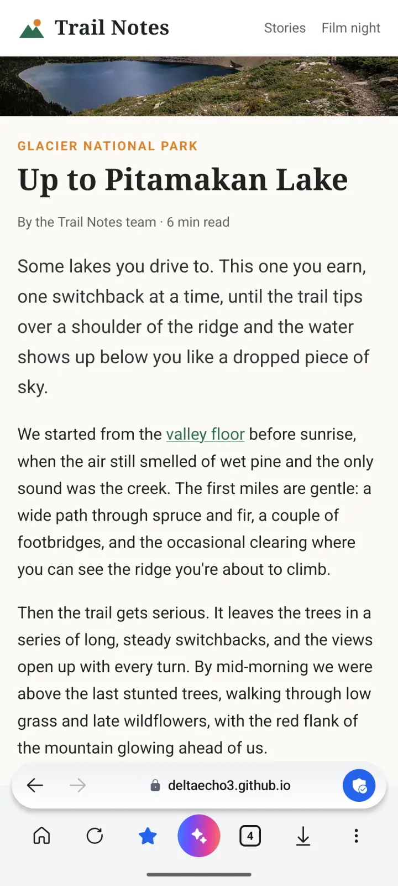
Hold the Tabs button
Holding Tabs opens Tab actions from the bottom of the screen, a few quick tab actions:
- In a private tab, Switch to tabs jumps back to your most recent tab, or opens a new one if you have none.
- If you have more than one space, a line for each of the others, like Go to Main.
- New tab and New private tab.
- Close tab closes the tab you're in.
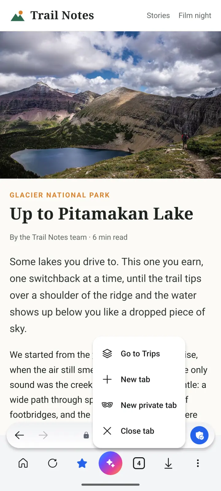
When you close a tab
A bar saying Tab closed shows just above the bottom bar for a few seconds, with Undo. Tap Undo to get the tab back. For a private tab it says Private tab closed, and for several at once, how many closed.
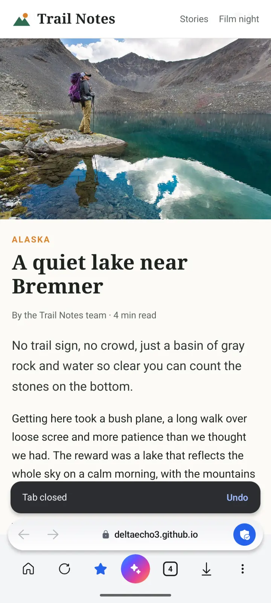
When you scroll
Scrolling down a page sends the bars away, so you see more of the page. Scroll back up, reach the top, or open another page, and they come back. While a page is still loading they stay put, for a few seconds at most.
With Full screen pages on (Android 11 and later, and on by default), the page runs to every edge on secure pages, and the clock stays hidden there. As you scroll, the address bar, the buttons and the phone's navigation bar leave together. The site's name, with its lock, shows for two seconds where the address was. Any downward drag brings everything back. With the address bar at the top it's a little different: see below.
With Full screen pages off, the bar shrinks to a slim strip with the site's name instead of leaving. Tap the strip to bring the bar back.
While a video plays and you leave the screen alone, the bar goes away by itself after a couple of seconds, so it doesn't cover the player's controls.
Turn Full screen pages on or off in Settings > Customize.
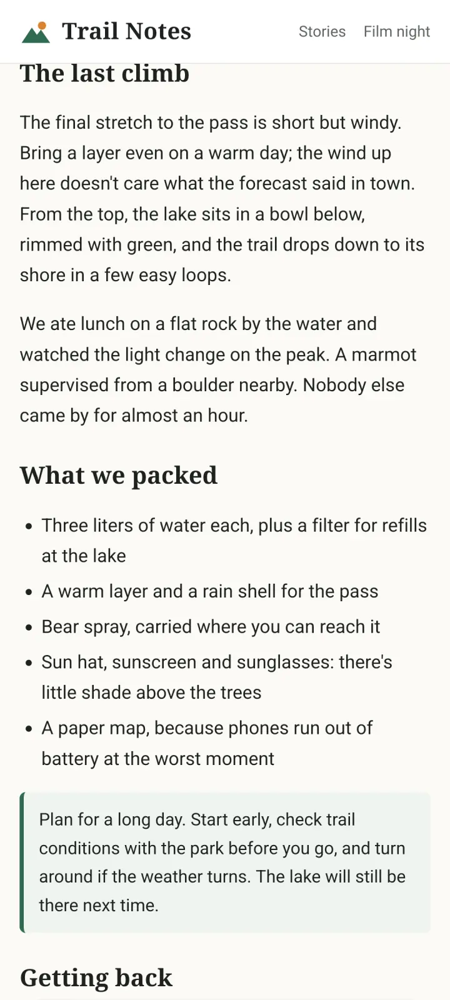
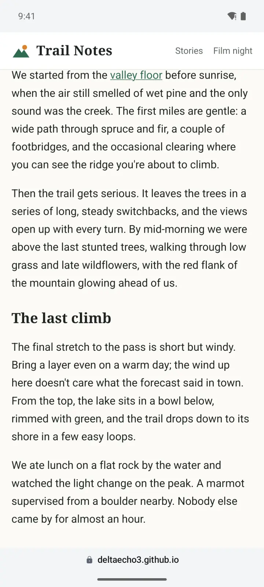
The address bar at the top
Prefer the address at the top? Settings > Customize > At the top. The top bar holds the address field and Shields. The assistant's colored stars sit at the end of the field while the assistant is on. The buttons float in a rounded dock over the bottom of the page, with the page showing around it: Back, Bookmark, Forward, Tabs, Downloads and the ⋮ menu, as Wayward comes. Downloads gets a ring that fills while downloads are under way, as on the bottom bar. Swipe up on the dock for the Tabs screen. While downloads are under way, the dock's ⋮ has a small badge of how many, unless Downloads is one of its buttons.
The dock has its own list in Settings > Customize > Bars > Dock: see Change the bottom bar's buttons. Whatever isn't on it is in the menu: Home and Reload (and Back, Forward or Bookmark if you take them off) are round buttons at the top of the menu, before Find and Translate, and Downloads is in its lower card, with how many are under way.
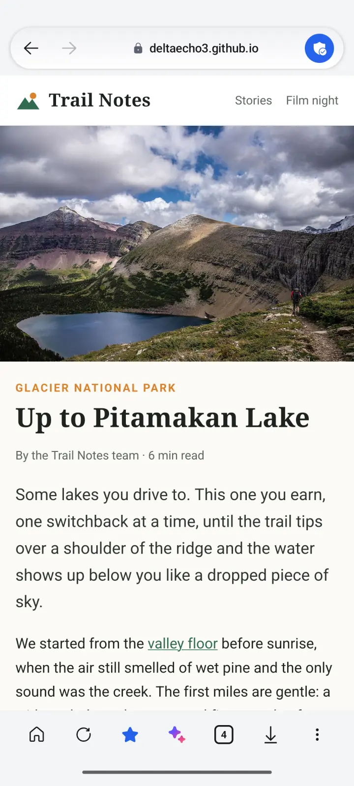
As you scroll down, the top bar slides away. With Full screen pages on, the page then has the whole screen, up to its top edge, with nothing over it; scroll up to bring the top bar back. Otherwise (Full screen pages off, a page that isn't secure, or Android 10), a slim line at the very top names the site, with its lock (or a globe on a page that isn't secure). In a private tab the line is purple, with the mask and Private. Tap it, or scroll up, to bring the top bar back. The dock floats over the page and stays up while you scroll. On any web page, with or without Full screen pages, a quick scroll down (a flick) that scrolls the page sends it away, so you can reach what the page has under it (on a page that scrolls, a flick on a map or a box inside it leaves the dock), and a quick scroll up brings it back, as do the page's top, another page or tab, a tap on the slim line and the keyboard closing. On a page that doesn't scroll as a whole, where only a part inside it scrolls (a video viewer, a reels feed, a chat, a full-page map), a flick anywhere sends the dock away and brings it back, even if it moves a reel or the map. So does a flick on a feed about the size of the screen inside a page, such as reels opened over a page you'd scrolled down. With the dock away there, pulling the page down doesn't reload it: a quick scroll up brings the dock back first. On the start page and in a locked tab it always stays, and with TalkBack on it never leaves, so its buttons are always there to find. Where the slim line shows, the page keeps room for it, so it never covers the site's own header.
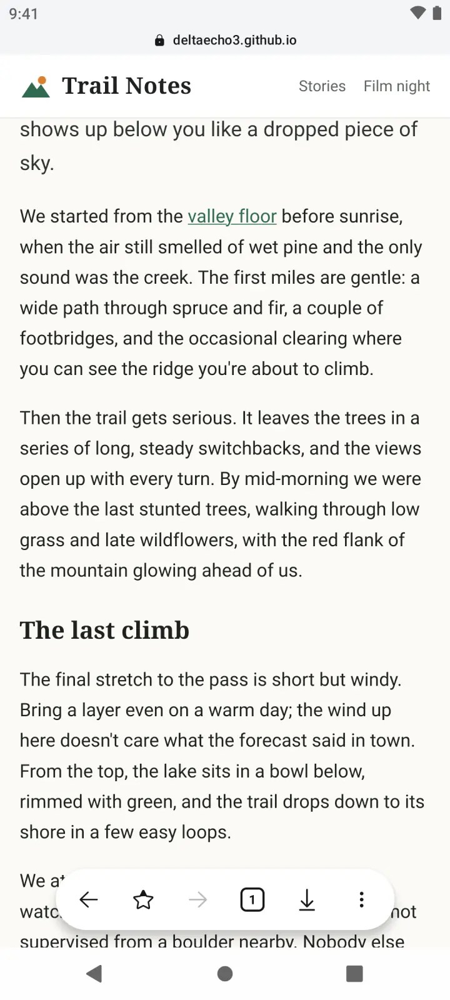
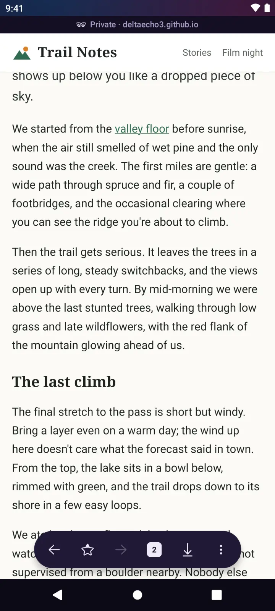
With Full screen pages on, there's no clock while you browse: on pages, the start page and every other page alike, so the address sits at the very top and never moves from page to page. On a phone with a camera hole at the top, the bar's color fills the strip around the hole and the address sits just under it. The Tabs screen and Wayward's other screens keep the phone's clock. The phone's navigation bar gets a strip of the bar's color under the dock, so its buttons don't sit on the page's last lines.
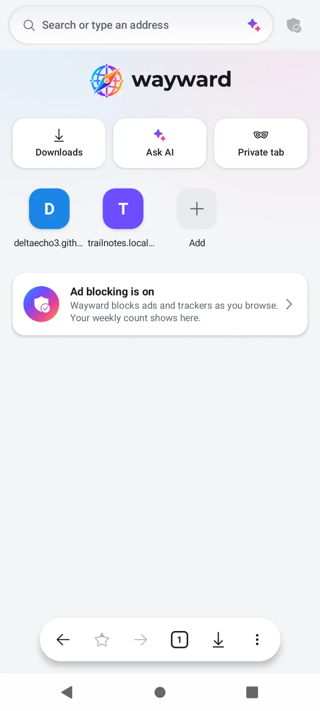
A page's own bar at the bottom (a video's seek bar, a comment box, a cookie notice) stays where the page puts it, at the bottom of the screen, with the dock floating over it: the dock never moves anything on the page. To reach it, flick the dock away. While the phone's navigation bar shows, the page's bar sits just above its strip, so nothing is under the phone's buttons.
A few more things
- Your phone's Back goes to the previous page. On a tab's first page it closes the tab and takes you back to the tab it was opened from, or to the app whose link opened it.
- When the keyboard comes up for a box on the page, the bottom bar steps aside so it doesn't cover what you type. With the address bar at the top, the top bar stays and the dock waits behind the keyboard.
- Controls at the bottom of a page (a video's seek bar, a comment box, a cookie notice) sit just above the bar instead of under it.
- On a wide screen (landscape, a tablet, an open foldable), the bars keep a phone's width, centered.
- In dark mode, the strips around a web page (the status bar, the bar and the gesture bar) are black, so the page stands out. Everywhere else, the dark theme uses greys.
- A video in full screen shows the site's name with "Back to exit" for a moment, so you always know whose page it is.
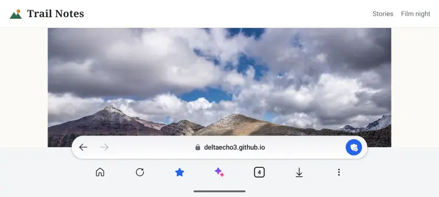
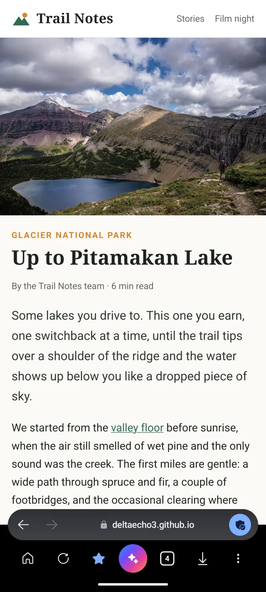